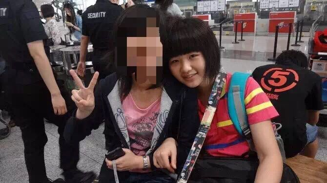

正文:
好想回答这个问题，我是真的长得小，不是打扮不成熟+_+。我们家遗传的，我爸，我姑，我奶都是圆脸，都看起来比实际年龄小。举我爸的例子，他老朋友说他跟20年前一样（当然这是恭维了，），他眼角也有皱纹，不多，今年48岁，我同学见了都说像30多的^_^…他很开心～
举我自己的例子，我初三毕业跟小三岁弟弟一个参加夏令营，其他同学有父母去的，她们父母就说：你看人家哥哥带着妹妹出来玩，多好啊什么什么的。（那时候我弟弟才小学毕业啊 ，表示他长得正常，没那么成熟），大四毕业回家在一个初中旁边理发店里头发，同去理发的一个阿姨问我：你们初中什么时候放的假…
读了研之后，留了长发，也开始学了一点点化妆，觉得自己变成熟了。然后在学校里代点课，相当于一个外语班，有本科生，研究生什么的。第一节上课一个同学看着我笑了一节，下了课问我，老师你怎么那么小…。
奉上短发时候照片。（大一下）